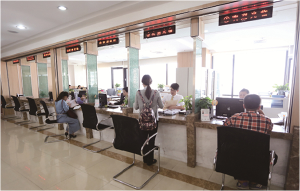

豪世华邦（杭州）
“专业，因为懂你”杭州华邦房地产代理有限公司前身为杭州华立房地产代理有限公司，于1999年9月正式挂牌成立，在2001年8月份开始发展连锁店，2007年6月正式启动品牌升级，2007年9月，华邦地产对公众房网进行了战略合并，并于2008年2月，与豪世沃德进行资源整合，目前拥有30多家连锁经营店,已发展成为杭州大型房产经纪服务商之一，市场份额跃居中介行业前两甲。
近年来，公司经历杭州房地产市场的风雨沉浮，步伐愈加矫健。在做好二手房买卖、房屋租赁等主营业务的同时，涉足商业地产、高端物业等买卖租赁，同时在房地产咨询、房地产营销策划、房地产销售代理等领域上积极探索与拓展。截止目前各项服务产品皆已成绩斐然，发展势头迅猛而稳健。
自公司成立以来，始终以服务社会，促进二手房市场的繁荣与健康为使命，加强自身修为，厚积薄发，为保持杭州中介代理行业的发展，尽着绵薄之力。2007年公司在完成品牌升级后，提出以“四化”为发展目标，首推杭城“6S”服务标准，给行业注入了全新的服务理念。
作为“浙江省放心中介”、“浙江省公众满意诚信中介”、“浙江省金承诺信誉单位”、“浙江省房地产中介先进企业”、“2008年度杭州市中介服务示范企业”、“2008年度杭州市房地产中介优秀企业”等多次获得政府、行业协会以及社会嘉奖的公司。公司重视以“诚信、专业、敬业”的姿态参与城市运营。百尺竿头，更进一步，在未来的日子里，我们将锐意进取，进一步拓展企业规模，致力于品牌化企业建设，提升从业人员素质，坚持以“专业地产中介服务商”为企业定位，为客户创造价值，为广大消费者提供更为优质的专业服务！
